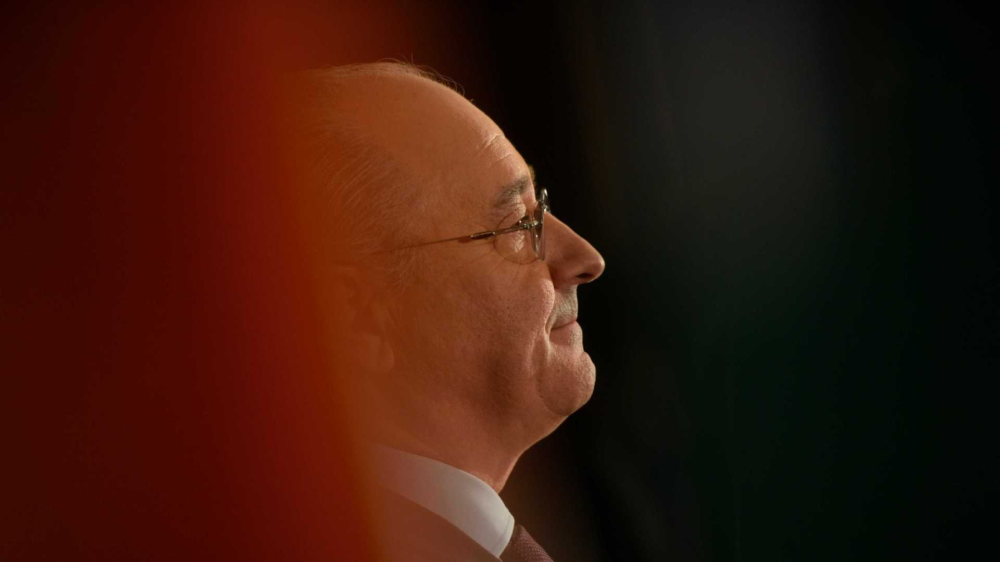

O presidente do PSD, Rui Rio, afirmou hoje que as propostas de alteração do partido ao Orçamento do Estado (OE), que são mais de 100, incluem medidas de equilíbrio orçamental e de "redução da despesa".
Há lá propostas que visam uma redução da despesa que é suficiente para cobrir aquilo que são as propostas que visam um aumento de despesa, para não degradarmos as contas públicas, porque isso é absolutamente vital, à exceção de uma proposta, que é a proposta do ISP, do imposto sobre a gasolina e sobre o gasóleo, porque aí, a promessa é do Governo", disse Rui Rio, na Guarda.
Segundo o líder nacional do PSD, que falava na sessão de encerramento da V Academia do Poder Local dos Autarcas Social-Democratas (ASD), "em 2016 o Governo disse que baixaria o imposto [sobre a gasolina e o gasóleo] assim que o preço do petróleo subisse".
"Essa é uma promessa do Governo, são eles que têm de saber onde há a contrapartida, e, por isso, nós estamos à vontade para fazer a proposta de pôr outra vez o ISP no mesmo patamar em que estava em fevereiro de 2016", justificou.
Acrescentou que, "tirando isso, tudo tem, naturalmente, uma contrapartida, na lógica do equilíbrio das propostas todas que globalmente fazemos".
No seu discurso, Rio destacou uma proposta "absolutamente emblemática" que tem a ver com a denominada taxa de proteção civil.
"Temos a maior carga fiscal de sempre. Ainda assim, o Governo vai querer criar um novo imposto a que chama taxa de proteção civil", observou.
Rui Rio disse que o PSD tem uma proposta de retirada desse artigo que cria a taxa de proteção civil porque, "basta" e "há um momento em que é preciso parar".
Lembrou também que no sábado ficou a saber-se que foi criado um imposto adicional ao IMI e que haverá um adicional ao adicional do IMI, "que não irá para as autarquias".
"Ainda hoje eu estou para perceber como é que é possível, num imposto que é municipal, o adicional a esse imposto e agora o adicional ao adicional não ir para as autarquias, mas ir para outros destinos que não as autarquias. Não percebo bem, inclusive a legalidade desse adicional", declarou.
Rio também reafirmou na sua intervenção que o OE tem "pequenas, médias e grandes mentiras" que já esclareceu.
Sobre a proposta do Governo para a redução dos passes sociais para Lisboa e Porto, disse que o PSD não está de acordo.
"Ou isto é aplicado ao país todo, ou então não. Ou seja, a nossa proposta diz 'sim', mas ao país todo. Enquanto não for ao país todo, 'não'. Porque não é justo. Nós temos de ser coerentes. (...) Se nós não queremos deixar o interior esquecido, como é que nós, em coerência, podemos tomar uma medida destas?", questionou.
Segundo o presidente do PSD, "as pessoas fora da Área Metropolitana do Porto e Lisboa continuam a pagar penosamente e com mau serviço, muitas vezes, os seus transportes para irem trabalhar e quem está nos grandes centros urbanos, tem a vida facilitada?".
"Eu sou a favor da facilitação da vida nos grandes centros urbanos, mas ao mesmo tempo de todos os demais", rematou, acrescentando que o Governo aponta que "vai ser depois para todos", mas, em sua opinião, "quando for, é para todos".
No encerramento da Academia do Poder Local dos ASD, o seu presidente, Álvaro Amaro, disse que o país vive "um equívoco político" e lembrou que no sábado passaram três anos após António Costa ter sido indigitado primeiro-ministro.
"Eu diria que, se houvesse justiça, quem devia ir a julgamento eleitoral foi quem há três anos não foi, porque há três anos não foi a julgamento eleitoral esta 'geringonça'. Então que vá agora. Mas não", disse no seu discurso.
Segundo Álvaro Amaro, o país também "assiste a um OE [que] não é apenas mentira, é batota, como já foi dito".